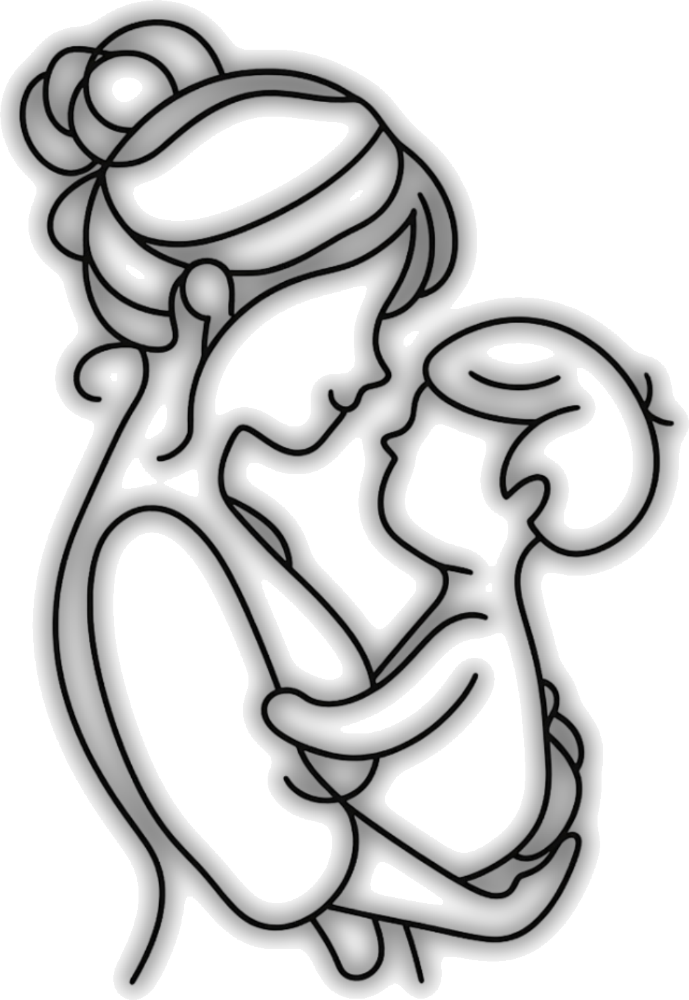

Serenestaは、ひとりのシッターが同じご家庭を継続して担当する「担当制」を採用しております。訪問のたびにご家庭が変わるのではなく、決まったお子様のもとへ通い続けることで、その子の個性や生活リズムを深く理解しながら、保護者様との信頼関係も丁寧に育てていく働き方です。回を重ねるごとに「次もあなたに来てほしい」と言っていただける——シッターご自身にとっても大きなやりがいにつながる環境だと考えております。
その分、Serenestaのシッターには、丁寧な保育と、訪問ごとの記録・ご報告をお願いしております。お子様の様子を観察し、その日の関わりや気づきをレポートとして保護者様にお届けすること——これがSerenestaのサービスの根幹です。
時給を業界平均より高く設定しているのも、こうした専門性に正当にお応えするためです。保育・子育て支援はかけがえのない仕事でありながら、報酬面で長く課題を抱えてきた領域でもあります。Serenestaは、シッターの専門性と誠実な仕事に見合う対価をお支払いすることを大切にし、今後さらに水準を高めていく方針です。
ご家庭との関係が深まれば、月次契約や専属契約へと進むこともあり、その場合は報酬も段階的に引き上げてまいります。質の高い保育を求めるご家庭、そして専門性を活かして長く働き続けたいシッター。Serenestaは、その双方にとって誠実であり続ける場でありたいと願っております。
お子様の生活と個性に合わせた、きめ細やかな保育を求めるご家庭を対象とした家庭保育サービスです。担当制・継続支援・丁寧な記録共有を通じて、ご家庭と長期的な信頼関係を築きます。
発達特性のあるお子様のご家庭に対し、外部支援施設（療育施設・発達支援施設・通級指導教室など）での取り組みを保護者様から伺い、同じ視点・同じ関わり方を訪問保育の中で再現するサービスです。
保育・子育て支援の専門性を正当に評価。時給2,200円からスタートし、業務内容・資格に応じて改定いたします。月次契約や専属契約への発展で報酬も上昇する設計です。
担当制を採用。お子様の個性や生活のリズムを深く理解し、信頼関係を築きながら長期的に関わることができます。
訪問保育の基礎・安全管理・記録の書き方まで体系的に学べます。レポートの書き方も研修でお伝えしますので、未経験の業務でも安心してスタートできます。
| 雇用形態 | パートタイム雇用（週20時間未満） ※週30時間超で正社員登用を積極検討いたします |
|---|---|
| 勤務エリア | 東京都心部9区 港区・中央区・文京区・目黒区・渋谷区・世田谷区・江東区・杉並区・品川区 |
| 勤務日数 | 週1日〜・応相談（担当制のため安定した稼働が可能です） |
| 時給 | グランドシッター：2,200円〜2,400円 プレサイスシッター：2,500円〜3,000円 研修期間中：1,000円／時 |
| 加算 | 夜間（22時以降）・早朝（7時前）＋25％ |
| 交通費 | 実費全額支給。保護者様からお預かりした交通費（一律1,100円／回）をそのままお渡しします |
| 支払方法 | 末日締め・翌月15日払い・銀行振込（振込手数料は当社負担） |
| 保険 | 業務中の事故は当社加入保険にて対応いたします |
| 研修 | 入職時に研修を実施。訪問保育の基礎・安全管理・記録の書き方などを学んでいただきます。詳細は面談時にご案内いたします |
フォームよりご応募ください。ご経歴・ご希望条件を確認いたします。
オンラインまたは対面にて、サービスへの理解やお人柄を確認させていただきます。
勤務条件のすり合わせを行い、雇用契約を締結します。
研修を受講後、担当ご家庭への訪問を開始します。